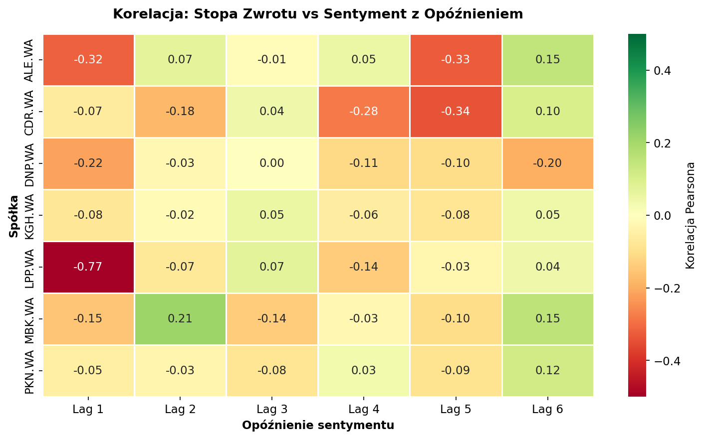
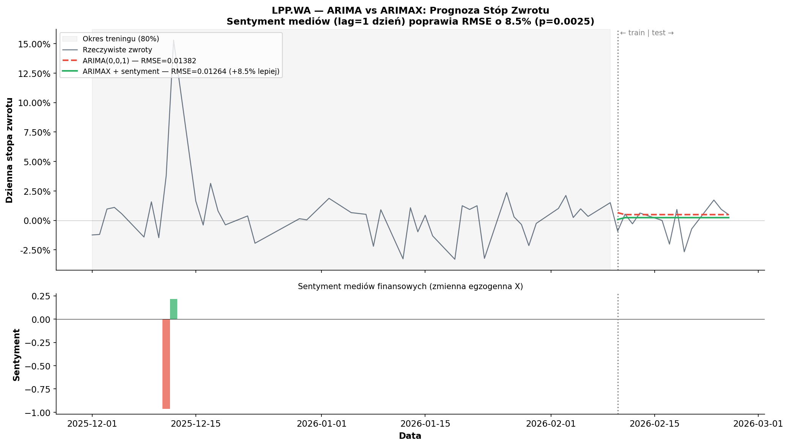

02
Wyniki Badania
LPP.WA
Najsilniejszy sygnał w badaniu. Sentyment mediów z poprzedniego dnia
istotnie poprzedza zmiany ceny (lag=1). Model ARIMAX z sentymentem
osiąga 8.5% niższe RMSE niż baseline ARIMA.
−8.5%
Poprawa RMSE
p=0.0025
ARIMAX p-value
lag 1–9
Istotne opóźnienia
CDR.WA
CD Projekt wykazuje zależność z opóźnieniem 5–10 dni sesyjnych —
media piszą o spółce, a rynek reaguje po 1–2 tygodniach.
Sentyment nieistotny w modelu ARIMAX — korelacja ≠ predykcja.
p=0.0001
Granger (lag=7)
6
Istotnych lagów
p=0.82
ARIMAX p-value

Test Grangera — istotność per spółka i opóźnienie.
Rozmiar punktu = −log₁₀(p). Czerwony = p < 0.05.

Korelacja Pearsona: stopa zwrotu vs sentyment z opóźnieniem 1–6 dni.
LPP.WA wyróżnia się wartością −0.77 przy lag=1.

Porównanie RMSE: ARIMA (baseline) vs ARIMAX z sentymentem.
Redukcja błędu prognozy o 8.5% dla LPP.WA.

Prognoza ARIMAX vs rzeczywiste stopy zwrotu LPP.WA.
Górny panel: prognozy. Dolny panel: sentyment (zmienna egzogenna X).